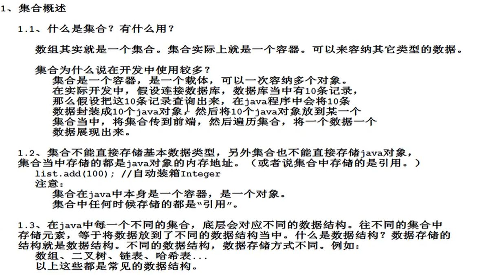
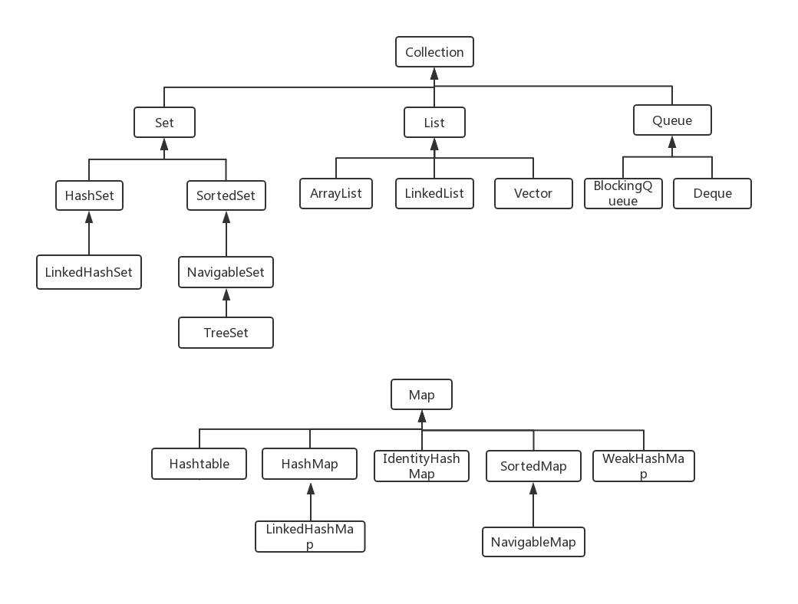

java集合在哪个包下？

java集合的继承结构：



Collection<E>接口
Collection中的常用方法：

遍历Collection集合，需要用iterator()方法返回一个迭代器对象，
遍历集合
Collection c=new Arraylist();
Iterator it=c.iterator(); //获取迭代器
while(it.hasNext){
Object o= it.next;
}
注意： 1.当集合结构发生改变时，必须重新获取迭代器，否则会出现异常：java.util.ConcurrentModificationException
2.遍历集合时，不能通过Collection的remove()方法删除元素，会出现异常：java.util.ConcurrentModificationException 。
可以通过Iterator中的remove()方法删除元素。Iterator中的remove()方法会主动更新迭代器。
3.迭代器迭代出的默认都是Object类型。
Collection中的contains()方法（判断集合中是否有该元素）
调用的是equal()方法。
remove()方法也会调用equal(),删除元素。

list接口
list接口特点：1.有序可重复；
2.list接口有下标，从0开始，以1递增。
list接口常用方法：
1.继承Collection接口的方法。
2.
list集合遍历：
1.通过下标遍历（特有的，set集合没有）
2.迭代器遍历。
ArrayList集合（非线程安全的）
1.ArrayList集合默认初始化容量是10(先创建了一个长度为0的数组，当添加第一个元素的时候，初始化容量10)；
2.集合底层是Object[];
3.ArrayList自动扩容，增长1.5倍。数组扩容效率较低，最好预估计减少数组的扩容次数。

链表优点：
随机增删效率较高；
缺点：
不能通过数学表达式计算被查找元素的内存地址，每一次查找都是从头结点开始遍历，直到找到位置。
linkedList集合（双向链表）
Vector集合（线程安全，效率较低，使用较少）
1.底层也是一个数组；
2.初始 扩容（扩容之后是原容量的2倍）。
怎么将ArrayList集合转换成Vector集合？(将非线程安全转换成线程安全)
java.util.Collections 集合工具类
java.util.Collections.sychronizedList();
泛型机制 指定集合中存储的数据类型。
泛型这种语法机制，只在程序编译阶段起作用，只是给编译器参考的。（运行阶段泛型没用）
使用泛型的优点：
1.集合中的数据类型更加统一了。
2.从集合中取出的元素类型是泛型指定的类型，不需要大量的向下转型。（不适用泛型迭代器取出的是Object类型）
JDK8之后引入了：自动类型推断机制（又称钻石表达式）
eg： 之前是 List<Animal>myList=new ArrayList<Animal>();
自动类型推断： List<Animal>myList=new ArrayList<>();
自定义泛型
JDK5.0之后新特性
增强for循环（foreach）
for(元素类型 变量名：数组或集合){
}
foreach缺点：没有下标。
HashSet集合

TreeSet集合

Map接口


转换成set集合中元素类型为Map.Entry。Map.Entry是Map中的静态内部类。
Map的遍历
1.获取所有的Key，然后遍历。
1>通过keySet()方法获取所有的key ，返回的是Set集合；
2>Set集合构造迭代器遍历得到每一个key；
3>通过key获取value。
String value=map.get(key);
2.foreach遍历
1>获取所有的key；
Set<Integer>keys=map.keySet();
2.foreach(Integer key:keys){
String value=map.get(key);
System.out.println(key+"="+value);
}
3.Set<Map.Entry<E,V>set>=map.entrySet();
将Map集合转化成Set集合。
遍历Set集合，每一次取出一个Node。
然后用迭代器遍历

还可以用foreach遍历

下面效率较高，适合大数据量。
HashMap
1.HashMap集合底层是哈希表/散列表的数据结构
2.哈希表是一个数组和单向链表的结合体。
数组：查询方面效率高，随机增删效率低。
单向链表：随机增删效率高，查询方面效率低。


面试

HashMap扩容每次*2；默认加载因子是0.75
注意：
放在HashMap k部分和HashSet中的元素，必须同时重写equals和hascode方法。
在JDK8之后，Hashmap 链表节点数 超过8个时，会把链表转换成红黑树数据结构。当红黑树数据结构节点小于6时，会重新把红黑树变成单向链表数据结构。（为了提高检索效率）
HashMap k和V可以为null;
HashTable（线程安全）
HashTable是线程安全，初始化容量是11，默认加载因子是0.75
扩容：原容量*2+1；
HashTable的k 和V都不能为null；
问题：HashMap和HashTable的哈希函数的实现原理？
问题：为什莫选择0.75作为默认加载因子？
问题：为什莫放在HashMap k部分和HashSet中的元素，需要同时重写equals和hascode方法？
问题：基于上一个问题，要怎末重写equals和hascode方法？
https://www.jb51.net/article/132415.htm
问题：equals == 和hashcode 的区别：
https://www.cnblogs.com/kexianting/p/8508207.html
问题： 为什么java的hashmap不支持动态缩小容量？
Properties属性类对象（线程安全的）
Properties是一个Map集合，继承Hashtabe，Properties的Key和Value都是String类型。
存
setProperty();
取
String getProperty();
TreeSet集合（可排序集合）
1.TreeSet集合底层实际上是一个TreeMap；
2.TreeMap集合底层是一个二叉树。
3.放到TreeSet集合中的元素等同于放到TreeMap集合Key部分。
4.TreeSet集合中的元素：无序不可重复，但是可以按照元素的大小顺序自动排序。
无参构造TreeSet集合：
自定义类型放在TreeSet需要实现java.lang.Comparable接口。
在compareto()方法设置比较规则。


也可以在创建TreeSet集合的时候，使用有参构造，传一个比较器Comparator进去，比较器需要实现Comparator接口。这种还可以用匿名内部类的方式。
结论

Collections集合工具类